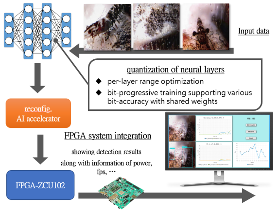
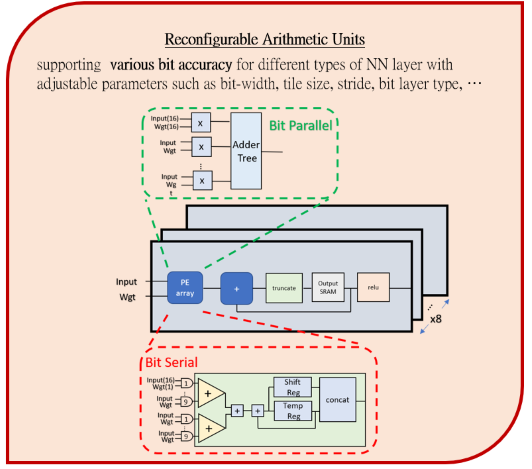

subProject 1
Design of Bit-Level Reconfigurable Neural Network Hardware Accelerator
 IMPORTANT TECHNOLOGY DEVELOPMENTS
1.位元依漸進式訓練模式減少量化時的精度流失，以支援動態可調之AI硬體加速器
2.以不重新訓練的方式，分層搜尋最佳位元區間
3.動態可調位元精確度以及不同種類神經網路運算，達到低功耗、高效率之運算。動態可調之參數: Tile size、Bit-width
4.使用Yolo_V3 Tiny架構，進行水下物件偵測，利用位元可調硬體加速器進行偵測，並且將系統利用FPGA進行整合
5.由PE支援不同位元精度計算，達到高效能之神經網路運算，位元量化法將權重壓縮 2.3 倍